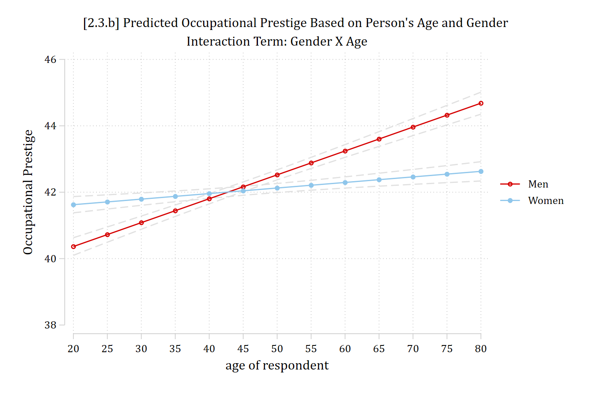
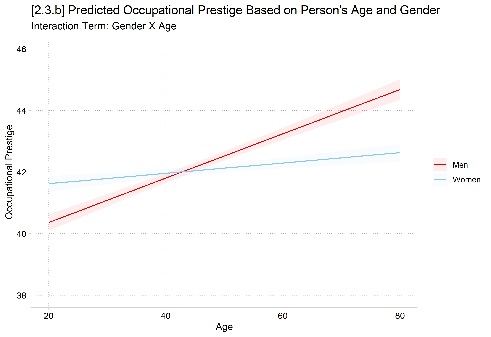

“Interaction effects exist when the effect of one independent variable is contingent on the level of another independent variable. For example, does the effect of obtaining more education depend on whether someone is white or black? Does the effect of aging depend on whether someone is a man or a woman?” (Mize 2019 p.81)
Interaction effects are also known as moderation (i.e., one IV moderates the effect of another IV)
Can allow the effect of one IV to vary across levels of another IV by including a product term of the two variables in the model
Multiply the two IVs together
Include the two original IVs and the product term in the model
(cda_gss.dta | GSS 1972-2021 CDA - Categorical Data Analysis | date created 202
> 3)
regress occprest c.age##i.woman i.college
Source | SS df MS Number of obs = 58,304
-------------+---------------------------------- F(4, 58299) = 4703.09
Model | 2777942.63 4 694485.657 Prob > F = 0.0000
Residual | 8608766.27 58,299 147.665762 R-squared = 0.2440
-------------+---------------------------------- Adj R-squared = 0.2439
Total | 11386708.9 58,303 195.302281 Root MSE = 12.152
-------------------------------------------------------------------------------
occprest | Coefficient Std. err. t P>|t| [95% conf. interval]
--------------+----------------------------------------------------------------
age | 0.072 0.004 16.316 0.000 0.063 0.081
|
woman |
Women | 2.365 0.290 8.146 0.000 1.796 2.934
|
woman#c.age |
Women | -0.055 0.006 -9.343 0.000 -0.067 -0.044
|
college |
College De.. | 16.392 0.121 135.948 0.000 16.156 16.628
_cons | 35.226 0.216 162.811 0.000 34.802 35.650
-------------------------------------------------------------------------------
eststore opintmodesttable opintmod, ///title("[2.3.a] Occupational prestige linear regression model"///"Interaction between age & gender") /// b(%5.3f) star(.05 .01 .001)
[2.3.a] Occupational prestige linear regression model Interaction between age &
gender
---------------------------
Variable | opintmod
-------------+-------------
age | 0.072***
|
woman |
Women | 2.365***
|
woman#c.age |
Women | -0.055***
|
college |
College D.. | 16.392***
_cons | 35.226***
---------------------------
Legend: * p<.05; ** p<.01; *** p<.001
library(haven) # import Stata data and labelslibrary(dplyr) # data manipulationlibrary(ggplot2) # graphslibrary(modelsummary) # regression tableslibrary(marginaleffects) # predictions and marginal effectslibrary(cleanplots) # graph schemecleanplots_defaults()gss <-read_dta("https://tdmize.github.io/data/data/cda_gss.dta")# Keep only model vars and drop any missing data on themgss <- gss[c("occprest", "age", "woman", "college")]gss <- gss[complete.cases(gss), ]# Treat binary variables as factors using their value labelsgss <- gss |>mutate(woman =as_factor(woman), college =as_factor(college))intmod <-lm(occprest ~ age * woman + college, data = gss)modelsummary(intmod, stars =c("*"= .05, "**"= .01, "***"= .001),title ="[2.3.a] Occupational prestige linear regression model: Interaction between age & gender")
[2.3.a] Occupational prestige linear regression model: Interaction between age & gender
(1)
* p < 0.05, ** p < 0.01, *** p < 0.001
(Intercept)
35.226***
(0.216)
age
0.072***
(0.004)
womanWomen
2.365***
(0.290)
collegeCollege Degree
16.392***
(0.121)
age × womanWomen
-0.055***
(0.006)
Num.Obs.
58304
R2
0.244
R2 Adj.
0.244
AIC
456692.2
BIC
456746.1
Log.Lik.
-228340.114
F
4703.092
RMSE
12.15
For linear additive effects, the coefficient on the product term tests whether there is an interactive relationship between the two IVs (i.e., whether the effect of one variable depends on the level of another variable). This is only the case for linear additive effects
The effect of age on occupational prestige is different for men and women (interaction term p < 0.001)
What is the effect of age for men? For women? Because “woman” is coded as 1, βage tells us the effect of age for men (when woman = 0). The effect of age for women = βage + βwoman X age which is 0.072 – 0.055 = 0.017. Again, this is only the case for linear additive effects. I generally go straight to plotting predictions with interactions
qui margins, at(age=(20(5)80) woman=(0 1))marginsplot, ///title("[2.3.b] Predicted Occupational Prestige Based on Person's Age and Gender", size(medium)) ///subtitle("Interaction Term: Gender X Age") ///ytitle("Occupational Prestige") /// recastci(rline) ciopts(lpat(dash) col(gs14)) ylab(38(2)46)
Variables that uniquely identify margins: age woman

plot_predictions(intmod, by =c("age", "woman"),newdata =datagrid(age =seq(20, 80, 5), woman = unique,grid_type ="counterfactual")) +scale_y_continuous(breaks =seq(38, 46, 2), limits =c(38, 46)) +labs(title ="[2.3.b] Predicted Occupational Prestige Based on Person's Age and Gender",subtitle ="Interaction Term: Gender X Age",x ="Age", y ="Occupational Prestige")

Marginal effects by levels of another variable
With linear effects, we can calculate the slope for each level of the nominal variable (here, woman) by adding the coefficients
But, the coefficients don’t provide a significance test for the effect of age for woman=1
Marginal effects straightforwardly provide this, without the need for mental math
Predicting: Linear prediction
Marginal effects (N_m1=58304)
| ME # Estimate SE P>|z|
---------------------------------+---------------------------------------
age + 1 (centered) |
Men | 1 0.072 0.004 0.000
Women | 2 0.017 0.004 0.000
avg_comparisons(intmod, variables =list(age =1), by ="woman")
woman Estimate Std. Error z Pr(>|z|) S 2.5 % 97.5 %
Men 0.0720 0.00441 16.32 <0.001 196.4 0.06332 0.0806
Women 0.0167 0.00393 4.26 <0.001 15.6 0.00903 0.0245
Term: age
Type: response
Comparison: +1
Easy to test the equality of the marginal effects; in the case of linear effects, will provide equivalent answer to interaction coefficients (but only in this case!)